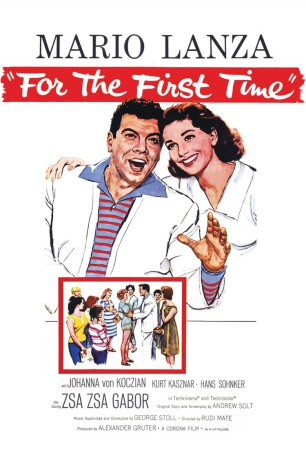

IMDB-Wertung: 6.7 / 10
IMDB-Wertung: 6.7 / 10  Metascore:
Metascore: 
Serenade einer großen Liebe ist ein US-amerikanisch-deutsch-italienischer Spielfilm von Rudolph Maté
 IMDB-Wertung: 6.7 / 10 Metascore:
Serenade einer großen Liebe ist ein US-amerikanisch-deutsch-italienischer Spielfilm von Rudolph Maté
Jahr: 1959
Dauer: 96 Minuten
FSK: 12
Land: Italien Studio: Constantin FilmTonspuren:
Untertitel:
Auflösung: 1080p (1920x800) Größe: 7833 MB
Genre: Musical
Regisseur: Rudolph Maté
Drehbuch: Andrew Solt
Soundtrack: George Stoll
Darsteller:
 Walter Rilla als
Walter Rilla als Datei: X:\1950-1959\Serenade einer grossen Liebe (1959, FSK12, 1920x800).mkv seit 24.06.2019
Festplatte: Gemischt-01+Anime
 Es gibt insgesamt 141 Filme in der Gruppe '1950-1959'
Es gibt insgesamt 141 Filme in der Gruppe '1950-1959'